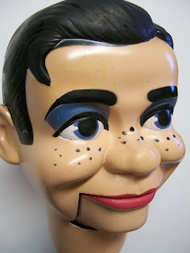
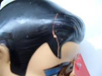

Jerry M. with Cracked head
2/26/2010
{kind=link}

{kind=link}

{kind=link}
This Jerry had fallen off a counter and his head was severely cracked (upper left photo). What you can't see is that the break ran all the way down the face, through the right eye, around the nose, to the corner of the mouth. Regluing and securing such a break is no problem at all if the head is going to be completely repainted. But the owner of this figure wanted it restored to as near original as possible - much more difficult.
I used "super glue" to repair the crack with spackling fill where needed. Then careful paint touchup, matching the various colors while keeping painting as minimal as possible. I was pleased with the results (upper right photo) as was the owner who after receiving the repaired figure sent me this note:
"You are a master of your craft. Mr. Lee never looked better -- I don't know how you did it. Thank you so much for giving the gift of your expertise."
To see photo samples of repairs I have done for other owners, take a look at my photo album here: http://maherphotos8.blogspot.com/ However, if you have a figure needing repair, please do not send it to me now - I have jobs in the shop scheduled into May. Mr. D